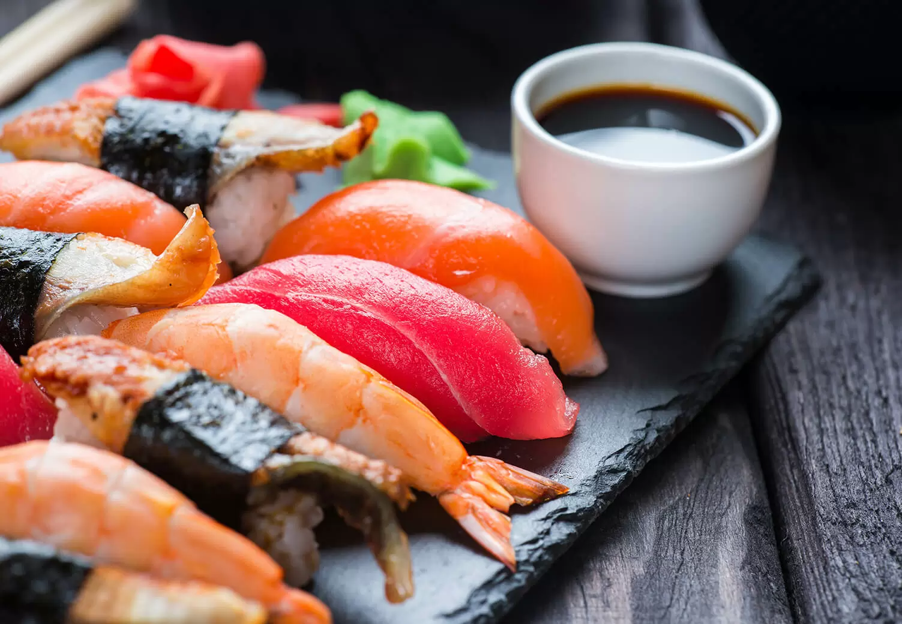

Рецепт Нигири

Ингредиенты:
Для риса:
- 300 г риса для суши
- 360 мл воды
- 3 ст. ложки рисового уксуса
- 1 ст. ложка сахара
- 1/2 ч. ложки соли
Для начинки:
- 200 г свежего тунца (или другой рыбы по вашему выбору)
- 200 г креветок (по желанию)
- Авокадо или огурец (по желанию)
- Соевый соус для подачи
- Wasabi и маринованный имбирь (по желанию)
Приготовление:
- Приготовление риса:
- Рис промыть под холодной водой, пока вода не станет прозрачной. Затем отцеживаем.
- В кастрюле смешайте рис и воду, доведите до кипения.
- Уменьшите огонь до минимума, накройте крышкой и готовьте 15 минут. Затем снимите с огня и дайте настояться еще 10 минут.
- В небольшой кастрюле смешайте рисовый уксус, сахар и соль. Нагрейте до растворения сахара и соли, но не доводите до кипения.
- Добавьте уксусную смесь к готовому рису, аккуратно перемешайте и дайте остыть.
- Приготовление начинки:
- Рыбу нарежьте на тонкие ломтики.
- Если используете креветки, отварите их в подсоленной воде до готовности, затем охладите и очистите.
- Формирование нигири:
- Смочите руки водой, чтобы рис не прилипал.
- Возьмите небольшую порцию риса и сформируйте шарообразную форму.
- На рис положите ломтик рыбы или другую начинку. При желании можно немного прижать начинку к рису.